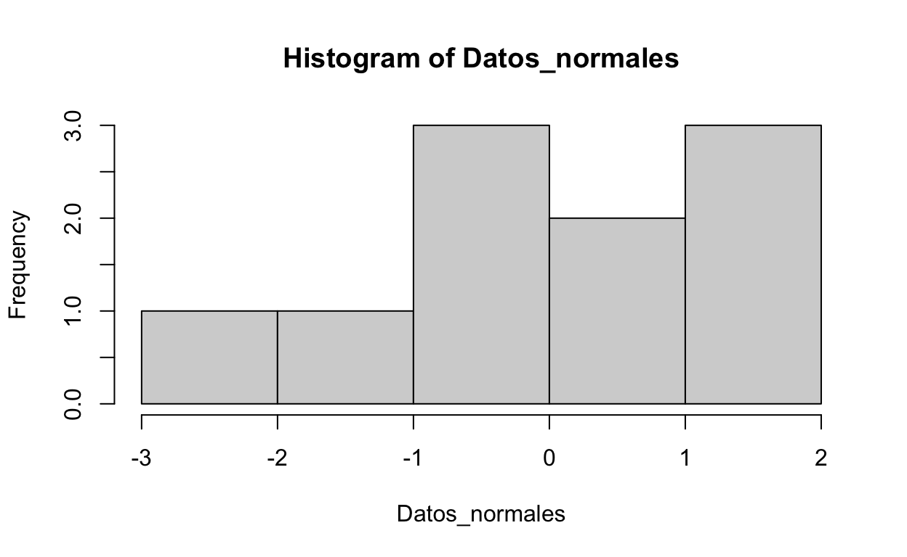
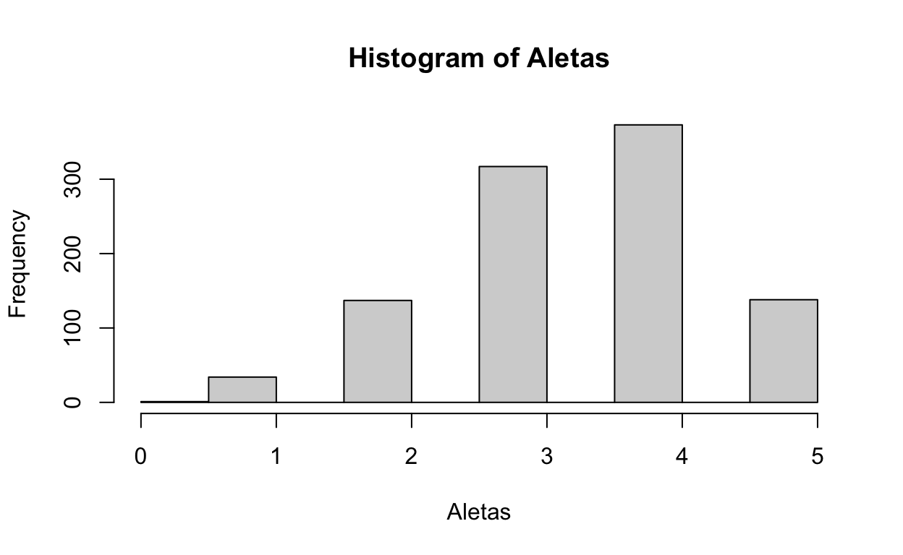
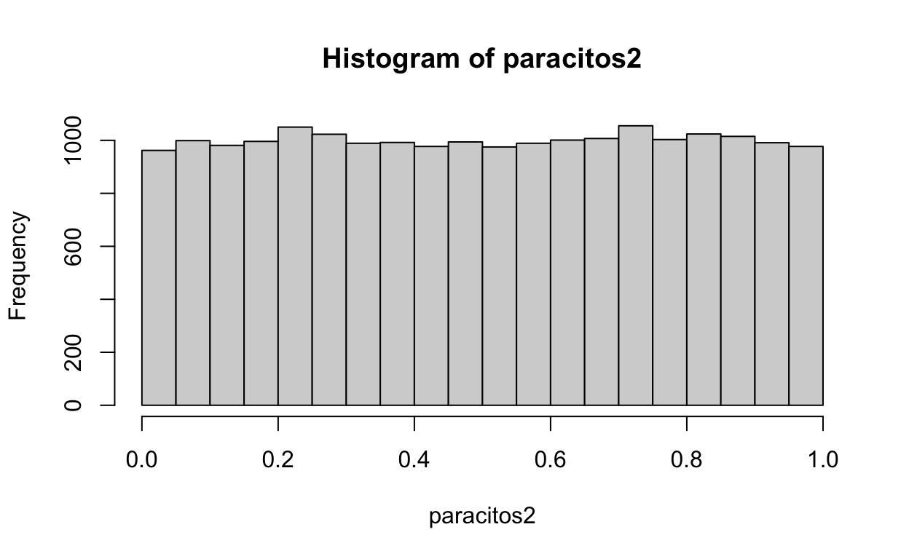
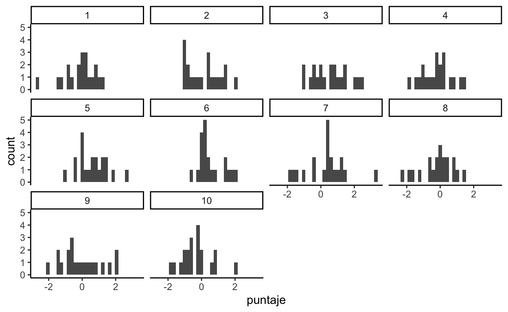
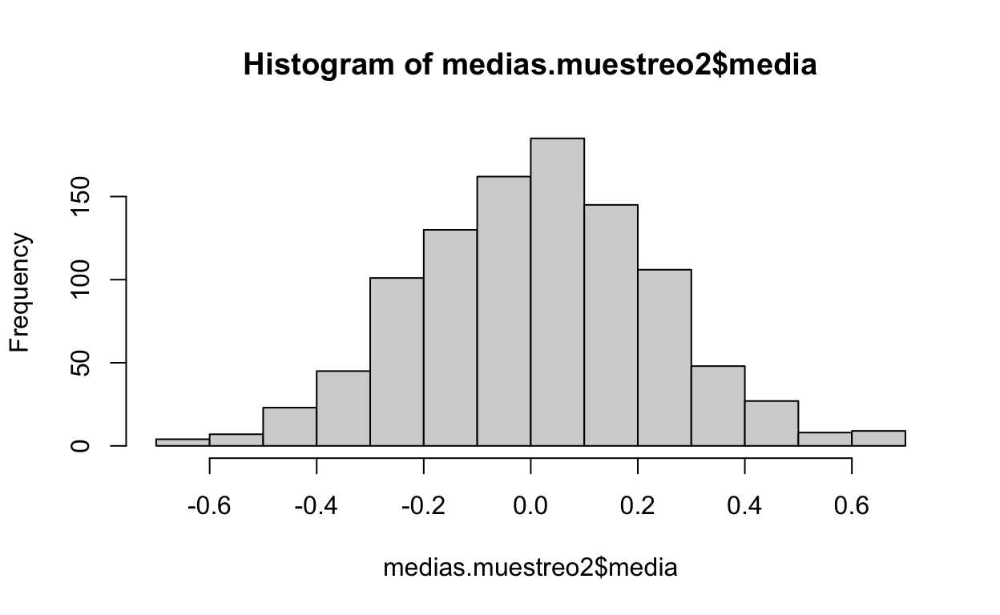
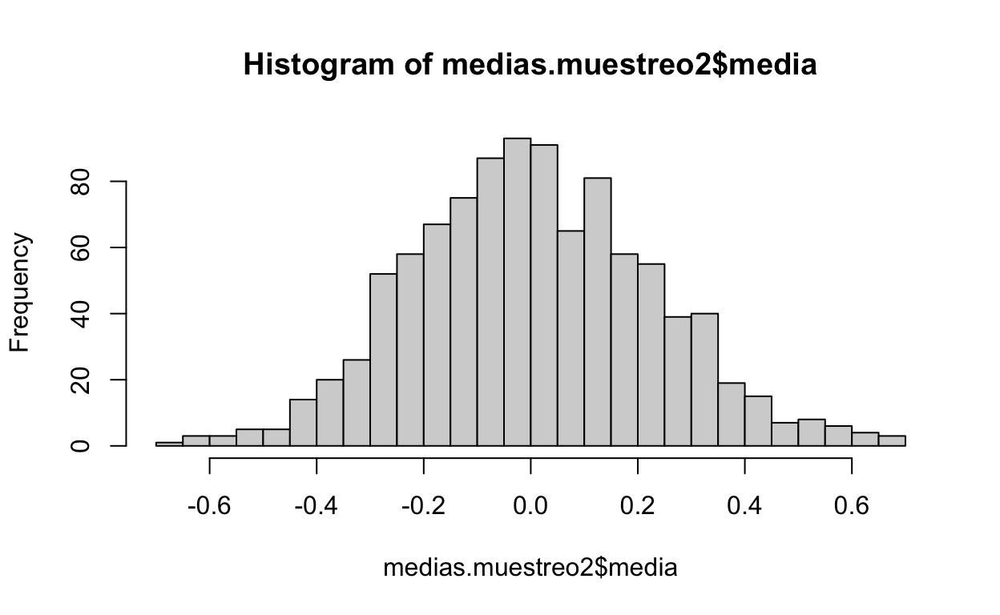

Crearemos un conjunto de datos provenientes de una distribución normal media 0 y desviación estandar 1
Datos_normales<-rnorm(10, mean = 0, sd = 1)
Datos_normales
[1] 2.2071448 -0.3598976 0.2242430 -1.1327169 0.4543587 0.3685378
[7] 2.1694170 -0.7710720 0.2765321 -0.6205228hist(Datos_normales)

Repetimos el proceso hora con más datos “cien mil”
str(Datos_normales2)
num [1:100000] 60.4 60.7 43.5 49.5 57.6 ...Calculamos valores de tendencia central y de dispersión
promedio1<- mean(Datos_normales2)
promedio1
[1] 49.9973desvest1<- sd (Datos_normales2)
desvest1
[1] 6.986189Comparamos el promedio y la desviación con los parámetros iniciales
DISTRIBUCIÓN BINOMIAL Ahora, un ejmémplo con datos aleatorios con distribución binomial cantidad de datos, número de ensayos (cero o más), probabilidad
Aletas <- rbinom(1000, 5, 0.7)
Aletas
[1] 4 3 5 5 3 4 3 4 4 4 4 3 5 3 3 4 5 2 4 5 3 5 3 4 4 3 4 4 2 2 2 4 4 4 4 3 4
[38] 2 4 2 3 4 4 4 4 4 3 3 2 4 4 3 2 2 5 2 5 2 3 4 4 3 4 4 4 4 5 3 2 4 5 2 3 2
[75] 3 3 5 3 3 4 4 3 3 3 4 3 5 5 2 5 2 3 4 3 2 1 5 5 4 4 3 4 4 4 5 4 4 3 3 5 3
[112] 4 5 4 3 4 3 5 4 3 4 5 5 5 2 5 4 3 2 4 4 5 4 3 2 3 2 4 4 5 3 4 3 4 4 4 4 4
[149] 3 5 4 3 5 4 4 5 3 2 5 2 4 5 5 5 3 4 3 4 2 4 3 2 4 3 4 5 1 4 2 3 4 5 2 3 3
[186] 2 3 2 5 1 3 5 3 5 5 4 3 5 3 2 4 4 5 3 1 5 4 2 3 4 4 2 5 4 2 4 3 5 5 4 4 3
[223] 5 3 5 5 3 4 2 3 4 5 5 3 3 4 3 4 2 3 5 4 5 4 4 5 4 3 3 3 5 4 3 3 5 3 2 5 5
[260] 4 4 3 2 2 3 1 4 2 3 4 3 4 4 3 4 4 5 2 4 5 4 2 4 3 4 3 2 3 3 5 4 4 5 2 4 3
[297] 4 4 4 3 3 3 4 3 4 3 4 3 5 4 5 4 5 4 2 4 4 5 4 2 5 1 4 3 2 4 3 4 3 5 4 4 2
[334] 3 5 4 3 3 5 5 3 3 4 3 3 5 3 4 2 2 3 3 4 3 3 5 4 5 5 3 3 4 3 4 4 2 4 3 4 4
[371] 3 4 4 4 3 3 3 4 4 4 5 4 3 2 1 4 5 5 3 4 3 2 4 5 4 4 4 5 4 2 3 3 4 4 2 2 5
[408] 2 3 5 5 4 2 2 4 4 5 2 3 2 3 5 4 4 3 3 2 3 3 5 4 2 3 2 5 3 5 3 3 2 5 2 3 5
[445] 3 4 5 4 3 3 2 3 2 5 4 5 4 4 3 4 4 2 5 4 3 3 2 3 5 4 5 3 3 1 4 4 5 4 4 5 4
[482] 4 5 3 4 2 2 1 1 5 3 4 4 4 2 5 5 3 4 3 4 3 4 4 4 4 5 3 3 4 5 4 4 2 5 4 5 4
[519] 3 3 4 4 3 3 2 5 4 3 3 3 4 5 4 2 4 3 4 5 3 3 4 4 4 2 4 2 3 2 4 5 4 4 4 4 1
[556] 3 5 4 5 2 3 3 4 4 4 3 3 4 5 5 5 4 3 4 3 5 3 5 2 2 3 5 5 4 2 5 4 4 3 4 3 4
[593] 3 3 3 4 4 2 3 4 5 3 4 4 3 3 2 4 4 4 3 3 3 4 1 3 4 3 4 4 4 3 3 3 4 4 3 3 4
[630] 3 4 4 4 3 3 5 5 3 4 2 2 3 5 3 5 4 3 3 3 4 5 2 3 3 4 4 3 3 3 4 3 2 4 4 4 4
[667] 3 4 2 5 4 4 4 3 3 3 3 2 3 5 4 4 3 4 3 4 3 5 5 5 2 2 4 4 5 4 4 4 5 5 5 3 4
[704] 3 5 5 3 3 3 3 5 2 2 3 3 4 4 5 5 5 4 2 1 4 4 3 5 2 5 4 3 3 3 3 2 2 4 3 4 2
[741] 4 4 3 4 4 4 4 4 5 4 2 5 4 2 4 5 1 4 5 3 5 2 3 4 4 5 2 1 4 5 4 3 4 5 3 5 3
[778] 5 5 3 4 5 3 4 4 5 4 3 4 3 4 4 3 2 2 4 2 3 4 4 5 3 2 3 4 5 3 4 4 2 4 1 4 2
[815] 2 3 2 2 5 3 4 2 3 4 2 3 4 3 4 3 2 3 5 4 4 5 4 2 4 4 5 2 2 4 5 4 4 3 4 2 2
[852] 4 4 2 3 3 3 4 3 2 5 4 5 5 4 2 3 3 4 4 3 3 4 4 4 3 2 3 5 2 3 3 3 4 3 4 4 4
[889] 4 4 2 4 4 5 3 3 4 2 4 4 4 4 3 3 3 4 4 2 4 3 4 3 3 2 4 2 5 4 3 3 4 1 5 3 3
[926] 2 4 3 4 3 4 3 4 1 5 5 4 4 3 4 4 4 3 4 5 4 2 3 2 5 4 4 4 3 2 4 3 4 5 3 4 2
[963] 1 1 5 4 4 2 5 2 2 3 3 3 4 4 4 1 4 5 5 5 5 5 5 3 3 5 5 4 4 3 3 4 3 3 4 5 4
[1000] 5hist(Aletas)

Generar distribuciones de datos sample toma una muestra del tamaño especificado de los elementos de x usando con o sin reemplazo.
x <- 1:100
sample(x, replace = TRUE)
[1] 49 53 35 2 6 64 59 21 10 99 68 15 8 22 32 84 64 89 92 85 10 33 33 28 33
[26] 82 93 53 11 7 25 42 28 12 47 99 8 43 85 33 51 86 37 79 63 17 9 85 69 39
[51] 42 62 9 4 60 96 42 44 73 39 23 65 84 28 74 50 46 48 24 87 4 26 85 84 60
[76] 20 30 46 96 13 25 55 47 89 26 32 57 38 16 25 79 82 27 27 66 94 78 18 39 53sample(x, 10, replace = TRUE)
[1] 70 19 57 56 33 89 75 78 46 52sample(x, 10, replace = TRUE)
[1] 96 2 14 26 7 71 78 65 79 51sample(x, 10, replace = TRUE)
[1] 44 42 68 55 67 26 69 93 93 40Con “sample” y mani salado y garapiñado
[1] "S" "G" "S" "G" "G" "S" "S" "G" "S" "G"Con sample y la cantidad de SNPs (polimorfismos de un solo nucleótido) por paciente
Ahora tomando una muestra sin reemplazo de la base de datos Crecimiento. Es importante importar los datos del archivo Crecimiento desde nuestra carpeta de trabajo
library(dplyr)
Crecimiento <- readxl::read_excel("data/Crecimiento.xlsx")
muestra_crecimiento<- Crecimiento %>%
sample_n(size=5,replace=FALSE)
head(muestra_crecimiento)
# A tibble: 5 x 2
Tratamiento Crecimiento
<chr> <dbl>
1 B 14.2
2 Control 4.7
3 Control 3.5
4 Control 5.7
5 Control 2.3Ahora genere datos con runif (random-uniform)
paracitos<-runif(n=1000,min=0,max=1)
paracitos
[1] 0.865448896 0.196229189 0.222352116 0.552584624 0.089207963 0.086243979
[7] 0.938202528 0.848289908 0.637155700 0.124153336 0.903699682 0.222454270
[13] 0.889207502 0.633749085 0.652602702 0.883940774 0.846156897 0.124678795
[19] 0.443020242 0.997630820 0.934760680 0.725515704 0.660217143 0.930410012
[25] 0.234943263 0.746738118 0.249798125 0.129365834 0.873731362 0.547440872
[31] 0.798843496 0.334109673 0.319204650 0.279708018 0.099660314 0.891092870
[37] 0.513348734 0.382078856 0.455209389 0.061447021 0.578027102 0.193938983
[43] 0.163987252 0.987485891 0.107793051 0.844400525 0.265235608 0.507157610
[49] 0.398060258 0.006727234 0.140535799 0.709890736 0.678030475 0.604958023
[55] 0.805997964 0.268478703 0.371467111 0.567429800 0.049611311 0.821310234
[61] 0.065086260 0.582430835 0.717821941 0.029960209 0.877388930 0.457657540
[67] 0.449283493 0.522814153 0.803306670 0.486208271 0.030550885 0.101197416
[73] 0.466038554 0.288661703 0.264491992 0.971496124 0.751125592 0.240884075
[79] 0.244475411 0.582820403 0.154239885 0.918973251 0.741588102 0.058197636
[85] 0.558399743 0.147240402 0.928196748 0.495388014 0.590107284 0.221911502
[91] 0.960898421 0.681502735 0.535356386 0.151059526 0.395872944 0.011411800
[97] 0.080750207 0.192532058 0.518913379 0.860312675 0.888186346 0.484740724
[103] 0.379209664 0.724063381 0.188305638 0.365226471 0.495639908 0.943002507
[109] 0.786555261 0.711193517 0.464204499 0.083338571 0.842142297 0.419089322
[115] 0.288761268 0.943514720 0.556180625 0.486455271 0.969616919 0.101455998
[121] 0.875968773 0.792382823 0.723474646 0.216752614 0.746606322 0.287638961
[127] 0.965859156 0.762937986 0.569049089 0.087583807 0.711427742 0.507210831
[133] 0.403639995 0.236919782 0.518809641 0.418359630 0.426729920 0.424245400
[139] 0.135764718 0.694977290 0.006213303 0.938534820 0.265104304 0.224648893
[145] 0.436072642 0.944360557 0.715991080 0.285694677 0.975286879 0.166842772
[151] 0.090503831 0.240879865 0.069435023 0.339047475 0.642156454 0.826222174
[157] 0.915330991 0.567959802 0.180349264 0.429640081 0.281470708 0.384673170
[163] 0.725450090 0.870658399 0.243796950 0.798547510 0.059725747 0.053708737
[169] 0.131045243 0.616383202 0.625801358 0.369233552 0.175322316 0.356533526
[175] 0.841052124 0.994346904 0.267282655 0.309879690 0.347577431 0.915585191
[181] 0.390379053 0.988454068 0.005115223 0.829084705 0.535102815 0.488000966
[187] 0.739568014 0.665832817 0.320062205 0.435066824 0.028016334 0.584672811
[193] 0.833872140 0.815636240 0.723457158 0.879254050 0.303881305 0.223788217
[199] 0.733750487 0.281985650 0.329633180 0.849195959 0.099729941 0.237762366
[205] 0.216359439 0.634309689 0.926257866 0.122431329 0.806469748 0.486840397
[211] 0.994056806 0.252962533 0.957233362 0.803290790 0.886232531 0.553626889
[217] 0.654556440 0.376422396 0.682562175 0.805525448 0.470129035 0.310702641
[223] 0.234625098 0.723077011 0.049747748 0.110377364 0.700855828 0.469171729
[229] 0.672582736 0.220380489 0.765304028 0.251377443 0.909519234 0.951054004
[235] 0.939908770 0.701166317 0.391229547 0.776768152 0.598555611 0.246864659
[241] 0.378192320 0.581315776 0.611314010 0.597901251 0.547155185 0.601331606
[247] 0.389036506 0.549852119 0.217311145 0.168181365 0.648585342 0.067887200
[253] 0.662694052 0.108855735 0.233063806 0.645580027 0.163018405 0.732388463
[259] 0.683876603 0.139212243 0.846689113 0.888737994 0.700687318 0.439763256
[265] 0.878706184 0.178795591 0.439364831 0.203949625 0.888582011 0.889732341
[271] 0.155079279 0.796891211 0.203738168 0.861489266 0.366164033 0.747088233
[277] 0.561863269 0.721167145 0.693601465 0.018824133 0.144740251 0.331566826
[283] 0.489935650 0.135430058 0.220912249 0.480612334 0.278842973 0.816500274
[289] 0.446255519 0.430573693 0.305582134 0.010673640 0.991285451 0.607247557
[295] 0.330973160 0.637168832 0.787545849 0.428350374 0.074152390 0.666830451
[301] 0.119366003 0.569380566 0.636387746 0.252233814 0.011188797 0.532715520
[307] 0.725799317 0.577780378 0.826474387 0.112567221 0.786702758 0.519918135
[313] 0.713469104 0.080559526 0.292523941 0.961064842 0.388390571 0.791238585
[319] 0.539726254 0.801861756 0.900809917 0.816804265 0.417230413 0.917921671
[325] 0.439224525 0.099351782 0.769732104 0.227660874 0.200416001 0.952370780
[331] 0.838712323 0.495897127 0.692518669 0.158442217 0.475253342 0.932207111
[337] 0.620039756 0.762232964 0.019858013 0.410369626 0.827599060 0.034305145
[343] 0.034810949 0.854417286 0.384703311 0.366851977 0.428075514 0.829299511
[349] 0.309229716 0.697572673 0.571196936 0.072314420 0.832794063 0.710282503
[355] 0.951582347 0.427126899 0.472902369 0.173557144 0.440532171 0.662850686
[361] 0.817587360 0.907086850 0.744316056 0.994350856 0.219367040 0.783621190
[367] 0.207937289 0.399802504 0.772784536 0.018820955 0.511972655 0.184742893
[373] 0.586348454 0.454658872 0.418097706 0.153531439 0.731694695 0.344424101
[379] 0.238700978 0.690367959 0.735598983 0.225399255 0.496707261 0.711940123
[385] 0.252535112 0.545054786 0.115261243 0.841612423 0.732879193 0.414278025
[391] 0.650156929 0.362940360 0.235222290 0.600238936 0.313517082 0.965799876
[397] 0.882362758 0.963636936 0.647811190 0.339267966 0.677471565 0.049585991
[403] 0.864329244 0.626834401 0.136542560 0.329738887 0.568344123 0.458529973
[409] 0.164853402 0.583248532 0.876306752 0.136551203 0.179369945 0.342891697
[415] 0.832459412 0.912177456 0.058922050 0.719016996 0.466813876 0.529789970
[421] 0.200840761 0.013550967 0.825046833 0.128990177 0.607093830 0.936297706
[427] 0.086731030 0.114719356 0.190916887 0.832828598 0.986750861 0.884485567
[433] 0.188341917 0.279862645 0.478502419 0.299965100 0.290409881 0.312658309
[439] 0.671986432 0.674438232 0.819422153 0.659850216 0.810296849 0.112814228
[445] 0.368176436 0.065873663 0.249719452 0.160030426 0.214713258 0.078668966
[451] 0.846884428 0.329992264 0.605172335 0.353079805 0.011769420 0.297461821
[457] 0.139117779 0.492872426 0.549696649 0.513648133 0.382609395 0.157492914
[463] 0.181879059 0.953634620 0.400888238 0.310680626 0.694659133 0.954241456
[469] 0.539404924 0.127986420 0.343671527 0.903137784 0.867555849 0.631212536
[475] 0.875886268 0.423102286 0.643274055 0.429509550 0.076097107 0.213455914
[481] 0.152069569 0.286048357 0.634950843 0.626125737 0.997676089 0.828795778
[487] 0.156837063 0.964503873 0.129112630 0.325476219 0.333544003 0.361838487
[493] 0.560989885 0.412756965 0.328895196 0.690904159 0.988885774 0.932980149
[499] 0.297528850 0.702701165 0.991315306 0.338724364 0.132895000 0.949624108
[505] 0.515184379 0.578796176 0.712626368 0.268602869 0.348311918 0.471573799
[511] 0.668988698 0.448399757 0.525703180 0.756735073 0.543711653 0.082597804
[517] 0.534870055 0.760898587 0.660018598 0.481551445 0.105974055 0.058866352
[523] 0.728863740 0.106688330 0.955051727 0.177334315 0.301396268 0.789264983
[529] 0.403589295 0.755037871 0.727167411 0.813145864 0.491246114 0.652910523
[535] 0.397908978 0.043444243 0.761865789 0.709522230 0.479953107 0.249669113
[541] 0.959215177 0.275031223 0.933996662 0.835261394 0.345612605 0.783547279
[547] 0.281260107 0.429312770 0.807534829 0.295771660 0.339410788 0.481588069
[553] 0.843115897 0.666282308 0.449292271 0.052794169 0.277309749 0.523284449
[559] 0.115467326 0.244870280 0.444195403 0.284245592 0.953039867 0.778815321
[565] 0.783751818 0.767278179 0.333996050 0.764560269 0.673777433 0.281091098
[571] 0.155507521 0.936009708 0.621369101 0.424719958 0.205181901 0.902303622
[577] 0.050180287 0.257834496 0.877149211 0.840344177 0.213247561 0.213566383
[583] 0.505772879 0.319097140 0.737502996 0.494923643 0.594867322 0.505702305
[589] 0.320217395 0.374035578 0.420994896 0.257688071 0.746625210 0.445317637
[595] 0.217586132 0.902936452 0.221962879 0.546655240 0.724344417 0.891336102
[601] 0.167988667 0.962205199 0.884577852 0.448522674 0.254999580 0.085749725
[607] 0.963819511 0.578756399 0.932450251 0.824867644 0.400632758 0.205666355
[613] 0.641896416 0.566402340 0.738696973 0.971725408 0.564085065 0.120841794
[619] 0.710718056 0.003195935 0.972712064 0.794208210 0.005959499 0.311333505
[625] 0.426258631 0.256386934 0.902413141 0.491835064 0.561517123 0.101813141
[631] 0.162316530 0.199418110 0.873482535 0.453992489 0.738872633 0.487314794
[637] 0.914948234 0.064479560 0.566550124 0.628398853 0.193320170 0.666366202
[643] 0.500153190 0.771320620 0.709493426 0.807091583 0.584550698 0.239636327
[649] 0.296487932 0.913387503 0.660823359 0.658551395 0.754947769 0.861744834
[655] 0.315832922 0.113645984 0.673052016 0.255506224 0.743729556 0.291573453
[661] 0.630558040 0.857696149 0.684556302 0.785617675 0.612022488 0.935844023
[667] 0.953861883 0.997830379 0.511537114 0.860091456 0.091778850 0.594910867
[673] 0.302634675 0.227497028 0.542666965 0.667385478 0.975856345 0.963114833
[679] 0.694014133 0.585866461 0.198564962 0.779949886 0.920553804 0.689552608
[685] 0.869462153 0.473671869 0.470223557 0.071156388 0.668993204 0.024057765
[691] 0.462828029 0.167918840 0.174725183 0.307407980 0.254026179 0.865716059
[697] 0.176623118 0.052527578 0.275770156 0.473034161 0.593522337 0.055964019
[703] 0.556753832 0.207055728 0.877585386 0.961282124 0.894463945 0.742867596
[709] 0.054886454 0.054050371 0.027727077 0.504225561 0.055693260 0.713053760
[715] 0.024058102 0.816243736 0.817431162 0.235548963 0.278757440 0.343644686
[721] 0.240573427 0.584131308 0.891515668 0.260292508 0.586350837 0.387878584
[727] 0.229121824 0.994760718 0.801159512 0.323780424 0.470660438 0.284205853
[733] 0.726110212 0.457997147 0.843792132 0.319005060 0.878440425 0.502819148
[739] 0.460947439 0.940304038 0.678703130 0.604691824 0.109606152 0.744631873
[745] 0.080085984 0.199679537 0.380925474 0.276533544 0.208076723 0.683597772
[751] 0.793523694 0.130528172 0.910515099 0.027051375 0.913045979 0.695970061
[757] 0.140610316 0.109207550 0.492386505 0.682070784 0.544239013 0.932036122
[763] 0.475416848 0.765221555 0.661080490 0.286101663 0.204446030 0.499455773
[769] 0.296705076 0.521821157 0.525534168 0.162201958 0.879806389 0.900045694
[775] 0.020716161 0.056756244 0.778229736 0.362254933 0.675944410 0.357308032
[781] 0.314474996 0.064577228 0.833189403 0.111328224 0.453050709 0.604277794
[787] 0.380389033 0.339509584 0.323574408 0.575539864 0.094018429 0.925385866
[793] 0.669306657 0.849740424 0.752315794 0.845416721 0.206924382 0.723910963
[799] 0.536699075 0.136657279 0.757689384 0.592667855 0.143177483 0.112628319
[805] 0.391706840 0.906843861 0.578251724 0.030731898 0.261131426 0.443406398
[811] 0.323247360 0.625974303 0.097114811 0.607262843 0.076148999 0.891488371
[817] 0.246210828 0.201336470 0.756848681 0.623153289 0.572038322 0.598525803
[823] 0.964740518 0.078350117 0.570099930 0.768351604 0.254900144 0.577288491
[829] 0.225556394 0.447102976 0.003340471 0.764343330 0.743467160 0.320855985
[835] 0.707319857 0.108826520 0.409860039 0.760710883 0.797337069 0.649510982
[841] 0.781042877 0.431244143 0.188947486 0.412444844 0.904394009 0.931984154
[847] 0.725158677 0.122710612 0.601112182 0.500817853 0.159282854 0.213490464
[853] 0.996867334 0.266874774 0.906746220 0.152870513 0.475086330 0.769383254
[859] 0.711195872 0.643644392 0.288036808 0.796467065 0.670515338 0.008188347
[865] 0.917636911 0.022094469 0.145533053 0.138012714 0.645821953 0.634772181
[871] 0.243958404 0.128496757 0.518582189 0.242119027 0.564049549 0.651242052
[877] 0.303420325 0.841396420 0.196800749 0.986333130 0.974195425 0.641006025
[883] 0.937913977 0.381053298 0.108529322 0.364805397 0.260464343 0.271021864
[889] 0.760874095 0.633361557 0.586601561 0.595447989 0.057531565 0.622658431
[895] 0.293079387 0.624513554 0.690742877 0.409279794 0.004733753 0.417749194
[901] 0.681750136 0.532965269 0.269506739 0.027957397 0.372265883 0.339163103
[907] 0.481140085 0.956068163 0.623910586 0.908632638 0.751297917 0.026725788
[913] 0.488392513 0.704926558 0.516739498 0.240588926 0.851704749 0.031710896
[919] 0.181834966 0.836602054 0.079516114 0.564561648 0.379894568 0.655966434
[925] 0.348755966 0.371594421 0.882028457 0.870477486 0.481108729 0.870636258
[931] 0.135973482 0.860217016 0.812720120 0.517016104 0.088125275 0.605695193
[937] 0.811665679 0.351352044 0.594307293 0.359845693 0.598492495 0.020333098
[943] 0.658328413 0.177017701 0.626549510 0.074351947 0.304758436 0.477574898
[949] 0.796771956 0.088131846 0.792538159 0.714550210 0.833579353 0.723886598
[955] 0.479230328 0.709151597 0.612457851 0.780664175 0.958611059 0.051214338
[961] 0.687193783 0.662263113 0.286024236 0.439672708 0.240007296 0.585156947
[967] 0.683808812 0.924320461 0.907327633 0.019042564 0.581807664 0.962575531
[973] 0.111167060 0.109546881 0.254066285 0.851065781 0.853660590 0.184787216
[979] 0.598691817 0.963026129 0.352233060 0.616081759 0.518680294 0.942152821
[985] 0.038353334 0.567374510 0.387972354 0.809573898 0.626465276 0.545990286
[991] 0.435008989 0.081146666 0.729776730 0.912053464 0.733732834 0.687788935
[997] 0.538301249 0.766818856 0.763482441 0.169041594hist(paracitos)
paracitos2<-runif(n=20000,min=0,max=1)
paracitos2
[1] 0.695389591 0.943749216 0.195125187 0.051226371 0.363857949 0.003490434
[7] 0.516028958 0.996571693 0.191957560 0.990635347 0.868792027 0.057666386
[13] 0.741963744 0.807717877 0.620432651 0.055499991 0.469068547 0.085536505
[19] 0.451043566 0.897004059 0.655287453 0.290240389 0.755124230 0.395861499
[25] 0.693701284 0.564958222 0.864686373 0.546811009 0.306773133 0.499037961
[31] 0.892570516 0.569661912 0.313617954 0.028044359 0.046939360 0.329615110
[37] 0.364005608 0.199470010 0.807538171 0.618078771 0.515252438 0.718051773
[43] 0.642440883 0.145304380 0.952826503 0.710021548 0.504792128 0.078556546
[49] 0.312486873 0.158294919 0.241702034 0.973091268 0.295751398 0.830852405
[55] 0.708851021 0.452669609 0.666240378 0.767725492 0.776283359 0.879054179
[61] 0.915132360 0.166633601 0.991473863 0.412850109 0.123482979 0.900124561
[67] 0.175252493 0.936173117 0.896219994 0.656127976 0.639992907 0.075921959
[73] 0.797395185 0.697032339 0.721784750 0.982101121 0.941056945 0.103477917
[79] 0.717401851 0.100895620 0.545081590 0.060808015 0.709442198 0.418028165
[85] 0.062023928 0.819417641 0.321546887 0.611541383 0.268004902 0.619426026
[91] 0.180191334 0.966697155 0.806819640 0.651856665 0.585065874 0.978979539
[97] 0.138157276 0.848399179 0.213080358 0.017916516 0.684993840 0.125404306
[103] 0.697896852 0.511236091 0.009362434 0.131317657 0.691402342 0.447690447
[109] 0.976973185 0.076544769 0.493205607 0.449212549 0.272936811 0.357155277
[115] 0.360905719 0.720478768 0.352002650 0.059986864 0.927094233 0.835050201
[121] 0.495307591 0.636111243 0.676306283 0.057643967 0.983262565 0.878025280
[127] 0.652346478 0.855437690 0.482601521 0.185506577 0.419130202 0.574161543
[133] 0.743354299 0.499805034 0.339619726 0.272349945 0.320176885 0.611172596
[139] 0.546892902 0.625791749 0.828592996 0.744105428 0.981469958 0.015646512
[145] 0.165803432 0.708096806 0.906649317 0.652316790 0.568656509 0.048239094
[151] 0.174296758 0.576396500 0.797114344 0.984885413 0.666932523 0.923042788
[157] 0.681319618 0.369354767 0.350601405 0.301338155 0.491706673 0.739796526
[163] 0.914622393 0.894872084 0.010368088 0.253620694 0.064077445 0.953450290
[169] 0.834603460 0.694794350 0.594490550 0.785832337 0.978835878 0.465498867
[175] 0.265815065 0.179048077 0.014441000 0.408692369 0.642791913 0.189370054
[181] 0.318743125 0.023195384 0.272308253 0.722373906 0.422302560 0.873369968
[187] 0.954634195 0.660679142 0.573685127 0.647959848 0.684792359 0.069649179
[193] 0.345326506 0.589237230 0.626017407 0.120414283 0.012904747 0.396499430
[199] 0.865713630 0.606797432 0.937461571 0.166301381 0.406799366 0.145042096
[205] 0.497621401 0.517070825 0.212685092 0.480091707 0.648066065 0.312563978
[211] 0.790313272 0.637823179 0.547485192 0.777559754 0.426970731 0.159008334
[217] 0.705643175 0.807306379 0.238133637 0.816507036 0.442444251 0.436180149
[223] 0.631544785 0.337761911 0.149570266 0.252460014 0.789915188 0.111778027
[229] 0.771402071 0.828681457 0.912525223 0.518929132 0.812961534 0.633884097
[235] 0.611348588 0.180423624 0.334186589 0.521653430 0.416105129 0.929849382
[241] 0.112925643 0.265073747 0.143543964 0.230404344 0.569487653 0.766228934
[247] 0.593337537 0.061820748 0.984624455 0.968798294 0.399776316 0.256864007
[253] 0.194509938 0.417687576 0.394114665 0.437954686 0.051318711 0.804201689
[259] 0.103149282 0.995918070 0.712882148 0.382551966 0.258611770 0.554151076
[265] 0.926278650 0.024930099 0.041695286 0.854088523 0.330625956 0.107245172
[271] 0.846490400 0.172864085 0.591121524 0.155472196 0.506243089 0.663920611
[277] 0.359443718 0.247350132 0.365931719 0.461306003 0.122890029 0.835785150
[283] 0.125193673 0.950844785 0.591356481 0.737219678 0.119431787 0.129713577
[289] 0.616653333 0.401206187 0.602240315 0.735936187 0.008048306 0.317472988
[295] 0.498505999 0.211379915 0.254398694 0.240824554 0.841068365 0.498394743
[301] 0.057646985 0.116744091 0.909299876 0.804395488 0.918090071 0.952223892
[307] 0.081581209 0.665561995 0.780456746 0.399513877 0.382788159 0.258390887
[313] 0.363686312 0.912447379 0.342891186 0.624757437 0.606047932 0.917039049
[319] 0.675114365 0.222004471 0.668864131 0.751134041 0.837648500 0.265131418
[325] 0.777676490 0.003586461 0.387079601 0.019500279 0.101304156 0.375364580
[331] 0.110042258 0.453106377 0.018055906 0.576293308 0.199038280 0.763793256
[337] 0.638357577 0.993666742 0.516017492 0.676745644 0.408298443 0.371961304
[343] 0.630449953 0.315757355 0.796748109 0.270335679 0.075147846 0.381948004
[349] 0.730344159 0.111136852 0.583075064 0.318828767 0.113632019 0.511155582
[355] 0.983583290 0.144843342 0.309448143 0.719096340 0.250467992 0.178210863
[361] 0.704541849 0.972682903 0.886397297 0.403294939 0.961581514 0.935606074
[367] 0.554552754 0.013103560 0.096226647 0.304408198 0.004513469 0.537890086
[373] 0.814149919 0.764194478 0.929757944 0.328633200 0.100670078 0.453711572
[379] 0.659131606 0.896061968 0.079239438 0.259720081 0.925217415 0.694927340
[385] 0.647808215 0.178417278 0.731737155 0.568418022 0.381069314 0.144237775
[391] 0.454233612 0.343801387 0.583509047 0.268773881 0.749203880 0.002571123
[397] 0.330407634 0.107579222 0.264873345 0.128548830 0.135870162 0.329926972
[403] 0.290715905 0.182936070 0.083616570 0.297444643 0.668253635 0.359007086
[409] 0.921718443 0.989095818 0.975854443 0.902689920 0.517674579 0.840064343
[415] 0.552641104 0.473147123 0.871657179 0.743645401 0.054808325 0.291000380
[421] 0.242288923 0.738268876 0.470707754 0.870171805 0.205442064 0.790693653
[427] 0.110360062 0.280022588 0.863209699 0.398081237 0.497199842 0.166367337
[433] 0.589394901 0.820657961 0.560584940 0.512499848 0.154458664 0.959739238
[439] 0.137732252 0.851296488 0.226917191 0.456679171 0.621938653 0.238260470
[445] 0.218662213 0.356221399 0.548146225 0.155388416 0.541905516 0.052634998
[451] 0.851922228 0.230638066 0.203708502 0.486402820 0.968475010 0.726953813
[457] 0.078618978 0.443079043 0.990714626 0.775415258 0.643176551 0.278323232
[463] 0.272452903 0.663121089 0.685816308 0.407951412 0.947075772 0.001775825
[469] 0.869161946 0.654056100 0.439585727 0.460938792 0.399506669 0.155690951
[475] 0.755216790 0.427601762 0.778853846 0.277198040 0.134357778 0.916681001
[481] 0.470921525 0.514964741 0.382378134 0.236068661 0.778624691 0.412372789
[487] 0.839255277 0.300254338 0.147433374 0.296748959 0.626934157 0.997611671
[493] 0.089772681 0.325212107 0.662712042 0.668881316 0.882514381 0.408846009
[499] 0.974268751 0.546638744 0.421771275 0.299270254 0.068613050 0.976827416
[505] 0.962916963 0.191355367 0.567975606 0.144250408 0.775628415 0.090720673
[511] 0.591381884 0.824509898 0.094160346 0.051922119 0.068942150 0.618009269
[517] 0.926311173 0.537371280 0.711303200 0.956191641 0.235170449 0.347084015
[523] 0.289857064 0.461977377 0.576263111 0.505906278 0.125530283 0.747780673
[529] 0.377956859 0.940586975 0.573241092 0.496796432 0.730822594 0.514746188
[535] 0.969224765 0.839781858 0.135734865 0.386997822 0.199938058 0.569488490
[541] 0.957782443 0.583593476 0.137494843 0.799048658 0.522358219 0.437595994
[547] 0.979024028 0.132877721 0.001874820 0.699371295 0.905730376 0.902552938
[553] 0.908412222 0.540157865 0.851992341 0.232996012 0.050066691 0.861123327
[559] 0.600293171 0.128302038 0.783867356 0.946013221 0.728576768 0.254734943
[565] 0.800443347 0.681194818 0.007062947 0.167080182 0.565544973 0.977098693
[571] 0.631271024 0.766257900 0.292746943 0.410744086 0.144092493 0.380434190
[577] 0.132209722 0.222473318 0.268929674 0.879183138 0.820101013 0.175454575
[583] 0.164259160 0.711522962 0.486557239 0.983336710 0.697255563 0.422789196
[589] 0.126270530 0.469886599 0.592449737 0.182926037 0.624419461 0.964795271
[595] 0.297374090 0.510694911 0.019959375 0.814621943 0.106925835 0.870636059
[601] 0.661817239 0.611239514 0.383531410 0.738286018 0.047543310 0.459411303
[607] 0.158405504 0.561002355 0.523781196 0.607295222 0.506567074 0.974355925
[613] 0.793353994 0.834980830 0.698166847 0.240237953 0.173488193 0.209631292
[619] 0.855784143 0.044020193 0.870186388 0.888724746 0.603226703 0.505822980
[625] 0.677303279 0.638827952 0.518981169 0.639502618 0.303923147 0.931237871
[631] 0.650772184 0.353095611 0.145252626 0.341586606 0.901972802 0.916000397
[637] 0.858644644 0.507210423 0.942169198 0.071972393 0.372500920 0.566534115
[643] 0.546305974 0.157324820 0.883428859 0.358640350 0.950707980 0.688914126
[649] 0.479457777 0.133701319 0.470439642 0.192556307 0.285939321 0.891048947
[655] 0.582977672 0.293275579 0.802552761 0.684238649 0.239091404 0.390939191
[661] 0.877838116 0.694422347 0.207075979 0.799333263 0.539286344 0.599445166
[667] 0.547674921 0.866550233 0.858524651 0.694618419 0.219682289 0.283471385
[673] 0.946039424 0.470530003 0.818294703 0.489284750 0.966133791 0.308069719
[679] 0.031169059 0.138755137 0.703055088 0.613597202 0.995164176 0.720488065
[685] 0.666596028 0.400956954 0.841637952 0.740277383 0.126827576 0.429652143
[691] 0.493449949 0.424251515 0.231845449 0.245441783 0.894665007 0.265010195
[697] 0.239415405 0.497037042 0.729851510 0.699322891 0.497834173 0.361162762
[703] 0.620835173 0.728433568 0.109388274 0.748350486 0.734552428 0.139688338
[709] 0.802854968 0.886286768 0.003507324 0.125773164 0.912530622 0.562949524
[715] 0.836848992 0.861037643 0.555209133 0.836330571 0.347685466 0.410790608
[721] 0.745016172 0.483848483 0.937178676 0.955987369 0.471582551 0.065671842
[727] 0.621012136 0.596613310 0.747942293 0.066870164 0.924236318 0.036451609
[733] 0.280493331 0.616072666 0.638567804 0.666169756 0.920311124 0.230940660
[739] 0.022477831 0.517905064 0.358319463 0.407649539 0.864422864 0.645094559
[745] 0.187078554 0.305583764 0.182313104 0.134891528 0.621203376 0.600420323
[751] 0.163346305 0.351306968 0.428701025 0.113621962 0.592626668 0.483167684
[757] 0.953248359 0.507897580 0.235024519 0.837091613 0.939983561 0.931733995
[763] 0.014688563 0.632403802 0.447000139 0.647945349 0.944994663 0.887902992
[769] 0.450092431 0.988155091 0.214516950 0.282124563 0.331133689 0.801154974
[775] 0.388613052 0.964569845 0.662485035 0.955411709 0.668389754 0.225101884
[781] 0.222907677 0.361343165 0.508569495 0.441913469 0.648472544 0.334485698
[787] 0.848066749 0.800608586 0.704179121 0.118087240 0.430478071 0.591747656
[793] 0.772446703 0.791514495 0.517546992 0.783174076 0.771091797 0.393259629
[799] 0.624419950 0.290893111 0.404942761 0.986702980 0.881553130 0.225984367
[805] 0.299604159 0.378478312 0.344265847 0.186250906 0.657200308 0.718090971
[811] 0.124306615 0.927173519 0.364881115 0.815548529 0.842421479 0.867726690
[817] 0.982634066 0.974485690 0.320416224 0.410481314 0.119723440 0.440667964
[823] 0.486560090 0.118308141 0.617345538 0.049647676 0.176999181 0.037335101
[829] 0.836408299 0.917929883 0.620465251 0.676274088 0.978783837 0.677511907
[835] 0.819463440 0.365881607 0.014440938 0.417846969 0.348133806 0.241979035
[841] 0.943306269 0.149705285 0.953590643 0.565011940 0.679824047 0.233333310
[847] 0.661217811 0.189419124 0.215973344 0.549967796 0.947224676 0.385714601
[853] 0.742904233 0.249943268 0.133723612 0.693700207 0.560367814 0.995204191
[859] 0.458254580 0.401682014 0.023331344 0.095136236 0.857761400 0.157203985
[865] 0.311569358 0.584868854 0.058800672 0.540382116 0.684343107 0.257709557
[871] 0.847926115 0.226419308 0.891654155 0.383739216 0.530050676 0.018726679
[877] 0.012267479 0.923211232 0.340724703 0.789868856 0.831570244 0.274237526
[883] 0.924447003 0.366661489 0.758255128 0.650257525 0.811608145 0.580612852
[889] 0.440816739 0.982096048 0.057626102 0.734044260 0.675678906 0.848898072
[895] 0.325374982 0.414617084 0.631602102 0.263928710 0.552402579 0.879588466
[901] 0.217792287 0.963868893 0.700005593 0.692548835 0.567769114 0.297004259
[907] 0.331836623 0.525165327 0.207875460 0.897647839 0.174662556 0.444243575
[913] 0.631620754 0.097320657 0.766352432 0.332147562 0.122196285 0.349810199
[919] 0.577295640 0.984350655 0.551770482 0.695833425 0.387732056 0.521488525
[925] 0.797942153 0.761892928 0.412763270 0.076987034 0.011369468 0.932808583
[931] 0.105374384 0.044388958 0.977674362 0.247252151 0.512389615 0.455408229
[937] 0.026667495 0.098889858 0.256483909 0.544193017 0.836303997 0.849451290
[943] 0.640282604 0.495021195 0.005708143 0.092517372 0.835219026 0.287875782
[949] 0.788272603 0.453884602 0.320100213 0.597524682 0.838894633 0.592771693
[955] 0.803505072 0.301139325 0.231472566 0.490613271 0.573392208 0.338390587
[961] 0.857398398 0.882346965 0.314048505 0.287430587 0.133030023 0.431273724
[967] 0.795479885 0.421947352 0.090720408 0.394132003 0.122120870 0.113980317
[973] 0.190954330 0.277731640 0.047813942 0.776517457 0.866442841 0.767786189
[979] 0.469452379 0.357012944 0.330126531 0.531957549 0.196057309 0.385449160
[985] 0.568924858 0.223575278 0.028180231 0.645227595 0.580228393 0.408031598
[991] 0.914105748 0.037853650 0.962173671 0.977925639 0.330214609 0.823577153
[997] 0.529163114 0.014722784 0.575723780 0.553548445
[ reached getOption("max.print") -- omitted 19000 entries ]hist(paracitos2)

Distribuciones de las medias de los muestreos
Primero, generamos 200 valores de puntajes, correspondientes a 10 muestreos con 20 observaciones cada uno [con media=0 y de=1]
puntaje<-rnorm(10*20,0,1)
puntaje
[1] -0.292081476 -0.446540358 -0.690690859 -1.432003613 -0.522223911
[6] -0.167517762 -0.010240137 -0.743725254 -1.972276663 1.514791809
[11] -0.286353405 1.240138555 -1.025881440 -1.475003184 -0.089786385
[16] -1.071537410 -0.712652977 -0.117841639 -0.949216199 -0.179070441
[21] -0.713813692 -0.243734094 0.472359343 -0.352800073 -0.253360444
[26] 0.733132115 0.361003949 1.875496149 0.384213808 -0.714649527
[31] -0.250824242 1.647979105 0.617258655 -1.405508268 -0.009432501
[36] -3.048610351 -0.174909078 0.884227468 0.662041927 0.291614674
[41] 0.140496655 -0.224737327 0.877697110 -0.688951888 0.418905396
[46] -1.086317594 1.959779060 1.291168239 -2.218013250 -0.057869648
[51] -0.816352810 0.718536057 -1.718617869 0.080921417 0.133194409
[56] -0.262858271 0.425201355 -1.215567731 0.316637232 1.358567079
[61] 0.517213501 0.640180919 0.129694721 -0.562134866 -0.850808598
[66] -0.916067165 1.996161887 0.068529541 -1.291268838 -0.345830431
[71] 1.066975580 -0.402375989 -0.029105926 0.339583343 0.994531412
[76] -0.481588944 -1.354185364 -0.550208360 1.534464486 -0.660339765
[81] 0.328262737 -0.422858552 -0.613595630 1.047057258 1.457609461
[86] -1.098733469 1.569307463 0.619278310 1.545516759 -0.052310081
[91] -0.316978085 -0.501721534 1.208800827 2.094880233 1.621895047
[96] -1.606042815 -1.173957513 1.462519749 -1.334499517 1.228789157
[101] 1.300392940 -1.490000769 1.129899073 0.277089179 -0.096131513
[106] -0.752467080 1.164363259 0.555414580 1.990778743 1.698212058
[111] -1.881586542 -0.977448100 0.317528031 -0.579609181 -1.164088886
[116] 0.194932088 -0.170819006 -0.298265296 -1.187282265 -0.584489985
[121] -3.093470559 0.350208464 0.363773537 -1.155602603 -0.405532264
[126] 0.383257731 -1.714586758 0.446146304 0.046713402 -1.640807333
[131] 0.200089494 -0.393812900 0.191083203 -0.867423824 0.481656698
[136] -0.297054810 -0.611620786 0.807302868 1.267696391 0.281927068
[141] 1.849456104 0.148182653 -2.128652539 -0.085631527 1.631886840
[146] -0.646707015 -0.135129991 -0.399979683 1.669613257 0.695262952
[151] -0.652697567 -0.926308931 -1.473732921 -0.235399264 -0.499996454
[156] -0.478715701 -1.434165397 0.767114511 0.221322697 -1.024606350
[161] -0.266641538 1.754495758 -1.806240354 1.480016560 0.898223193
[166] -0.376611979 -0.272280552 -0.401715412 -1.826700115 0.478142727
[171] -0.245341974 -1.944456194 0.938249028 0.963972884 -0.743747563
[176] 0.097059591 0.614895875 -0.796135639 -0.804569375 0.975054805
[181] -1.366604749 1.229228161 -1.284070295 1.040565527 1.575961345
[186] -1.304982388 0.400989114 -0.555441411 0.608560892 -0.795250035
[191] -0.219217495 -0.308032295 -1.329705834 0.341930623 0.957885910
[196] -0.591184681 -0.923020036 0.547963397 1.516897179 0.370003766Creamos un vector, indicando cada uno de los 10 muestreos genera datos de 1 al 10, veinte veces
muestreos<-rep(1:10,each=20)
muestreos
[1] 1 1 1 1 1 1 1 1 1 1 1 1 1 1 1 1 1 1 1 1 2 2 2 2 2
[26] 2 2 2 2 2 2 2 2 2 2 2 2 2 2 2 3 3 3 3 3 3 3 3 3 3
[51] 3 3 3 3 3 3 3 3 3 3 4 4 4 4 4 4 4 4 4 4 4 4 4 4 4
[76] 4 4 4 4 4 5 5 5 5 5 5 5 5 5 5 5 5 5 5 5 5 5 5 5 5
[101] 6 6 6 6 6 6 6 6 6 6 6 6 6 6 6 6 6 6 6 6 7 7 7 7 7
[126] 7 7 7 7 7 7 7 7 7 7 7 7 7 7 7 8 8 8 8 8 8 8 8 8 8
[151] 8 8 8 8 8 8 8 8 8 8 9 9 9 9 9 9 9 9 9 9 9 9 9 9 9
[176] 9 9 9 9 9 10 10 10 10 10 10 10 10 10 10 10 10 10 10 10 10 10 10 10 10Luego, creamos un dataframe que combina las observaciones con el muestreo
df_muestreos<-data.frame(muestreos,puntaje)
df_muestreos
muestreos puntaje
1 1 -0.292081476
2 1 -0.446540358
3 1 -0.690690859
4 1 -1.432003613
5 1 -0.522223911
6 1 -0.167517762
7 1 -0.010240137
8 1 -0.743725254
9 1 -1.972276663
10 1 1.514791809
11 1 -0.286353405
12 1 1.240138555
13 1 -1.025881440
14 1 -1.475003184
15 1 -0.089786385
16 1 -1.071537410
17 1 -0.712652977
18 1 -0.117841639
19 1 -0.949216199
20 1 -0.179070441
21 2 -0.713813692
22 2 -0.243734094
23 2 0.472359343
24 2 -0.352800073
25 2 -0.253360444
26 2 0.733132115
27 2 0.361003949
28 2 1.875496149
29 2 0.384213808
30 2 -0.714649527
31 2 -0.250824242
32 2 1.647979105
33 2 0.617258655
34 2 -1.405508268
35 2 -0.009432501
36 2 -3.048610351
37 2 -0.174909078
38 2 0.884227468
39 2 0.662041927
40 2 0.291614674
41 3 0.140496655
42 3 -0.224737327
43 3 0.877697110
44 3 -0.688951888
45 3 0.418905396
46 3 -1.086317594
47 3 1.959779060
48 3 1.291168239
49 3 -2.218013250
50 3 -0.057869648
51 3 -0.816352810
52 3 0.718536057
53 3 -1.718617869
54 3 0.080921417
55 3 0.133194409
56 3 -0.262858271
57 3 0.425201355
58 3 -1.215567731
59 3 0.316637232
60 3 1.358567079
61 4 0.517213501
62 4 0.640180919
63 4 0.129694721
64 4 -0.562134866
65 4 -0.850808598
66 4 -0.916067165
67 4 1.996161887
68 4 0.068529541
69 4 -1.291268838
70 4 -0.345830431
71 4 1.066975580
72 4 -0.402375989
73 4 -0.029105926
74 4 0.339583343
75 4 0.994531412
76 4 -0.481588944
77 4 -1.354185364
78 4 -0.550208360
79 4 1.534464486
80 4 -0.660339765
81 5 0.328262737
82 5 -0.422858552
83 5 -0.613595630
84 5 1.047057258
85 5 1.457609461
86 5 -1.098733469
87 5 1.569307463
88 5 0.619278310
89 5 1.545516759
90 5 -0.052310081
91 5 -0.316978085
92 5 -0.501721534
93 5 1.208800827
94 5 2.094880233
95 5 1.621895047
96 5 -1.606042815
97 5 -1.173957513
98 5 1.462519749
99 5 -1.334499517
100 5 1.228789157
101 6 1.300392940
102 6 -1.490000769
103 6 1.129899073
104 6 0.277089179
105 6 -0.096131513
106 6 -0.752467080
107 6 1.164363259
108 6 0.555414580
109 6 1.990778743
110 6 1.698212058
111 6 -1.881586542
112 6 -0.977448100
113 6 0.317528031
114 6 -0.579609181
115 6 -1.164088886
116 6 0.194932088
117 6 -0.170819006
118 6 -0.298265296
119 6 -1.187282265
120 6 -0.584489985
121 7 -3.093470559
122 7 0.350208464
123 7 0.363773537
124 7 -1.155602603
125 7 -0.405532264
126 7 0.383257731
127 7 -1.714586758
128 7 0.446146304
129 7 0.046713402
130 7 -1.640807333
131 7 0.200089494
132 7 -0.393812900
133 7 0.191083203
134 7 -0.867423824
135 7 0.481656698
136 7 -0.297054810
137 7 -0.611620786
138 7 0.807302868
139 7 1.267696391
140 7 0.281927068
141 8 1.849456104
142 8 0.148182653
143 8 -2.128652539
144 8 -0.085631527
145 8 1.631886840
146 8 -0.646707015
147 8 -0.135129991
148 8 -0.399979683
149 8 1.669613257
150 8 0.695262952
151 8 -0.652697567
152 8 -0.926308931
153 8 -1.473732921
154 8 -0.235399264
155 8 -0.499996454
156 8 -0.478715701
157 8 -1.434165397
158 8 0.767114511
159 8 0.221322697
160 8 -1.024606350
161 9 -0.266641538
162 9 1.754495758
163 9 -1.806240354
164 9 1.480016560
165 9 0.898223193
166 9 -0.376611979
167 9 -0.272280552
168 9 -0.401715412
169 9 -1.826700115
170 9 0.478142727
171 9 -0.245341974
172 9 -1.944456194
173 9 0.938249028
174 9 0.963972884
175 9 -0.743747563
176 9 0.097059591
177 9 0.614895875
178 9 -0.796135639
179 9 -0.804569375
180 9 0.975054805
181 10 -1.366604749
182 10 1.229228161
183 10 -1.284070295
184 10 1.040565527
185 10 1.575961345
186 10 -1.304982388
187 10 0.400989114
188 10 -0.555441411
189 10 0.608560892
190 10 -0.795250035
191 10 -0.219217495
192 10 -0.308032295
193 10 -1.329705834
194 10 0.341930623
195 10 0.957885910
196 10 -0.591184681
197 10 -0.923020036
198 10 0.547963397
199 10 1.516897179
200 10 0.370003766Hacemos un histograma para cada muestreo por separado (utilizando el paquete ggplot2
library(ggplot2)
ggplot(data = df_muestreos, aes(x=puntaje)) +
geom_histogram() + facet_wrap(~muestreos) +
theme_classic()

Parece que hay variacion entre los diferentes muestreos. Eso se llama, “error aleatorio de muestreo”. Ahora, sacamos la media de cada muestreo con el paquete dplyr
library(dplyr)
medias.muestreo<-df_muestreos %>%
group_by(muestreos) %>%
summarise(media=mean(puntaje))
medias.muestreo
# A tibble: 10 x 2
muestreos media
* <int> <dbl>
1 1 -0.471
2 2 0.0381
3 3 -0.0284
4 4 -0.00783
5 5 0.353
6 6 -0.0277
7 7 -0.268
8 8 -0.157
9 9 -0.0642
10 10 -0.00438Juntas, estas medias deben estimar la media de la distribucion de la poblacion (0).
Quedó cerca, pero no es 0 exactamente.
¿Esto parece una distribucion normal?, y si jugamos un poco con el tamaño de los intervalos de clase?
Entonces, una distribucion de medias construida con solamente 10 muestreos de 20 observaciones nos ofrece una representacion de poblacion un poco…triste.
Se puede aprovechar el poder de la computadora y R para simular 1000 muestreos en lugar de 10.
Primero, crearemos otro dataframe con mas muestreos
puntaje2<-rnorm(1000*20,0,1)
muestreo2<-rep(1:1000,each=20)
df2<-data.frame(muestreo2,puntaje2)
df2[1:25,]
muestreo2 puntaje2
1 1 0.3084059
2 1 1.2603521
3 1 -1.2624570
4 1 -1.2314691
5 1 -1.7041242
6 1 0.4268376
7 1 1.4655388
8 1 -0.5753726
9 1 -1.0862481
10 1 0.1242411
11 1 0.2062682
12 1 -1.6873551
13 1 2.3067746
14 1 -1.7090869
15 1 -1.8388438
16 1 -1.1151267
17 1 -1.3622112
18 1 -0.2282783
19 1 -1.1765099
20 1 1.1287960
21 2 1.7947599
22 2 -0.3469915
23 2 -0.6536239
24 2 -0.8972725
25 2 -0.3929521Luego, sacamos las medias de cada muestreo
medias.muestreo2<-df2 %>%
group_by(muestreo2) %>%
summarise(media=mean(puntaje2))
medias.muestreo2[1:10,]
# A tibble: 10 x 2
muestreo2 media
<int> <dbl>
1 1 -0.387
2 2 -0.121
3 3 0.0424
4 4 0.160
5 5 -0.0579
6 6 0.0820
7 7 0.428
8 8 0.117
9 9 0.159
10 10 0.253 Y finalmente, crearemos un histograma y las medias para describir la distribucion de las medias de los 1000 muestreos.
mean(medias.muestreo2$media)
[1] 0.002121639Probablemente, el valor es mas cercano a 0 comparado con la distribucion de arriba con solamente 10 muestreos
hist(medias.muestreo2$media)

Y con mas intervalos de clase?
hist(medias.muestreo2$media,breaks=30)

Se mantiene como una distribucion normal, con una media cerca de 0